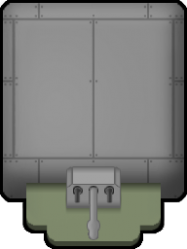
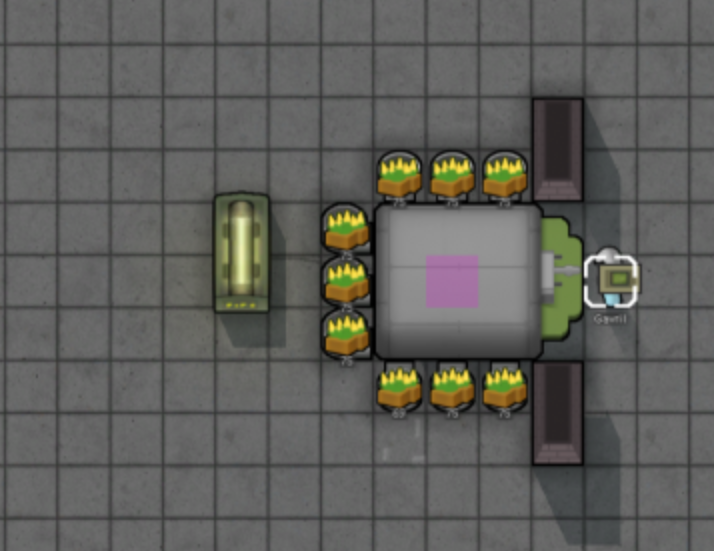
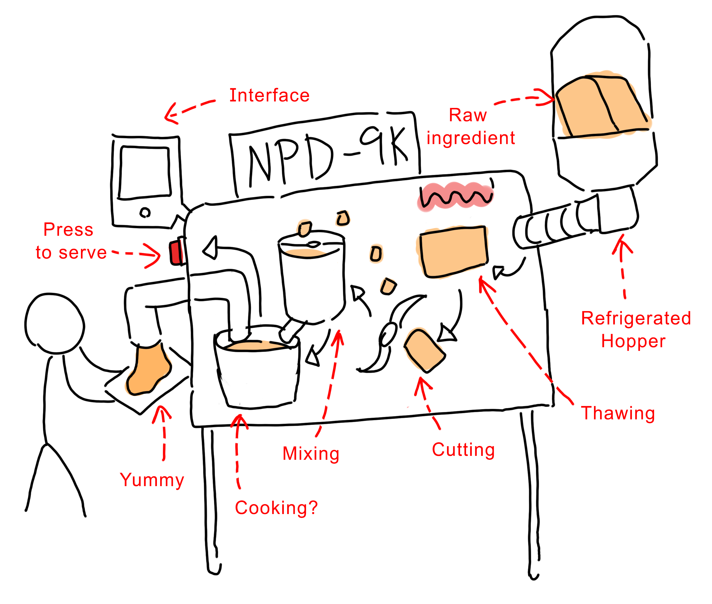

As the title suggests, I'm in desperate need of a nutrient paste dispenser. For those unfamiliar, a nutrient paste dispenser is a device engineered to provide a balanced blend of essential nutrients in an easy-to-consume paste. Imagine an ice cream machine, but instead of dispensing ice cream, it serves a well-blended, nutrient-rich meal. My first encounter with this concept of a nutrient paste dispenser was in a game called Rimworld (Fig. 1 and 2). In the game, raw food is placed in a hopper adjacent to the nutrient paste dispenser. By interacting with the device, the in-game character can obtain their nutrient paste meals.
 Fig.1 Nutrient Paste Dispenser from Rimworld. [1]  Fig.2 In-game character using a nutrient paste dispenser with hoppers around it. [1]While this may sound like a concept straight out of a sci-fi movie (Fig. 3), in the world where technology has revolutionized every aspect of our lives, our dining experience hasn't been left out. We're all familiar with trendy meal kits, state-of-the-art kitchen gadgets, and even 3D food printers. Yet, nutrient paste dispensers have not yet gained the same popularity.
Fig.3 A nutrient paste dispenser is similar to the food tube that appears in the prison cells in the Star Wars series, Andor.Don't get me wrong, I cheerish great and delicious food just like anyone else. However, the preparation of a healthy meal (assuming we aren't eating out for every meal) can sometimes be time-consuming. The commitment to meal planning, shopping, cooking, and cleaning up requires a significant chunk of time - a luxury not everyone can afford in the kitchen. Consider this: waiting for rice to cook and meat to marinate, washing dishes, and cleaning the frying pan (especially the oily one) often takes more time than consuming the meal itself. Additionally, who's to say that the nutrient paste must taste bad?
Therefore, a nutrient paste dispenser can be a game-changer. With the push of a button — “beep”, you can have a nutrient-rich meal ready in seconds. This convenience could significantly free up your time, especially when working on a tight schedule.
If the nutrient pastes are produced using sustainable methods, not using a dispenser could mean a higher environmental footprint from your food consumption, particularly if your diet relies heavily on traditional agriculture and livestock farming.
An often overlooked advantage of nutrient paste dispensers is their potential contribution to sustainability. Traditional agriculture and livestock farming have a significant environmental impact, contributing to deforestation, water pollution, and greenhouse gas emissions. Nutrient pastes could be produced using more sustainable methods, such as vertical farming, hydroponics, or even lab-grown nutrients, significantly reducing their environmental footprint (atleast, the food source do not have to look appealing). This factor is also one of the reasons why food printing is a major focus in food tech: it aims to produce sustainable food sources.
Another point to consider is the challenge of quantifying and summarizing nutrient content without a nutrient paste dispenser. Without such a device, you'll need to manually calculate and balance your nutrient intake, a process that can be time-consuming and prone to inaccuracies.
A nutrient paste dispenser has the potential to revolutionize personalized nutrition. Imagine it as a smart device that understands your daily dietary needs and dispenses a customized blend of nutrients accordingly. It could take into account factors such as your age, weight, health conditions, activity levels, and even your taste preference. This device could potentially adjust the nutrient composition based on your daily requirements, ensuring you receive the right amounts of protein, fiber, vitamins, minerals, and other necessary nutrients.
Additionally, nutrient paste dispensers simplify the act of consuming a meal, saving you even more time. Take this for example: when eating a steak, you need to cut it into pieces, chew, and swallow (especially for those who order their steak well-done, yucks). This process is considerably more time-consuming compared to consuming a protein bar, which is far more convenient and quicker to eat. With the same reason, the mushy texture of the nutrient paste allow you to just suck and consume the meal with minimum chewing.
For peoples with specific medical conditions or difficulty swallowing, the benefits are even more pronounced. Nutrient pastes offer a convenient and safe way for these peoples to consume the necessary nutrients.
These are the reasons why I need a nutrient paste dispenser, maybe even desperately. While I'm not entirely certain about its workings, I do have a general idea based on what I've seen in Rimworld. To help illustrate this, I've drawn a doodle (Fig. 4):
 Fig.4 This is how the dispenser might work in my imagination. Raw ingredients are placed inside a refrigerated hopper. The ingredients then go through the process of thawing, cutting, mixing, cooking (Or magics that process the raw foods into a paste meal). There is also an interface for user to analyze their diet and customize their meals.So, if anyone ever creates a startup around building a nutrient paste dispenser, I would greatly appreciate your existence.